| |
Busch Gardens Williamsburg Review
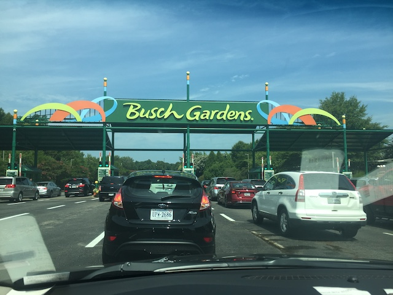
Busch Gardens Williamsburg is a fantastic park to visit as not only does the park have a badass coaster collection, as Alpengeist, Apollo's Chariot, and Griffon are all really fun B&Ms, on top of all the other really good coasters they have. But on top of that, it has so much other stuff to do. I mean, the park does have animals. OK, maybe not nearly as much as its Floridian Sister, as this isn't a full blown zoo. But they still have some cool animals to check out here. And on top of that, the park just has this amazing atmosphere. The entire place is themed to Europe, and god damn it! They do a REALLY good job at that sort of theming. I may not be able to critique Busch Gardens Tampa's Africa theming, since....I've never been to that continent. However, Europe is a region of the world I have visited, and they do a REALLY good job with the theming (Granted, it's a Busch Park. They always do a really good job). It's also a really well run park, with great operations, and great food to go with it! Let alone the fact that this park is just continuing to grow and get better and better. I mean....look at Pantheon! God damn it! That thing looks f*cking amazing! I can not wait to get back to Busch Gardens Williamsburg to get on that thing! And for so many other reasons. Since....this really is one of the best theme parks in America.
Rollercoasters
There is a link to a review of all the Rollercoasters at Busch Gardens Williamsburg.
(Please keep in mind that there's no reviews of DarKoaster or Pantheon since neither of them existed during my last visit).
Top Coasters
Alpengeist Review
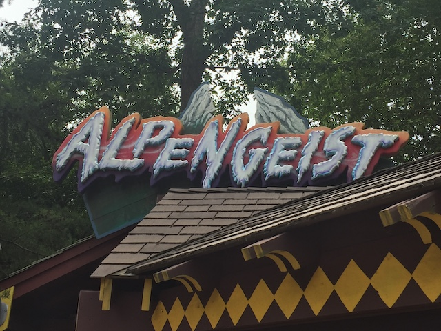
Apollo's Chariot Review
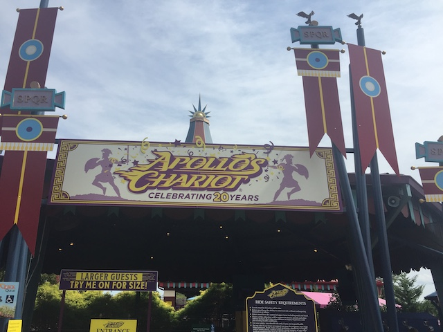
Griffon Review
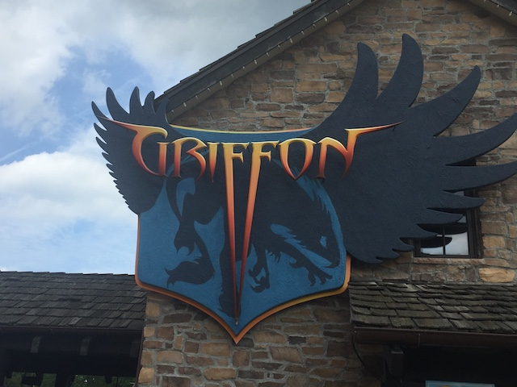
Really Fun Coasters
Loch Ness Monster Review
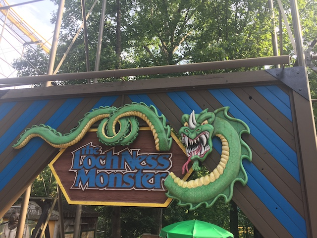
Tempesto Review
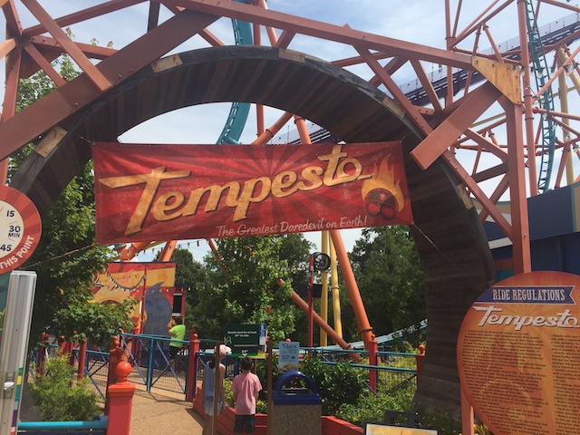
Verbolten Review
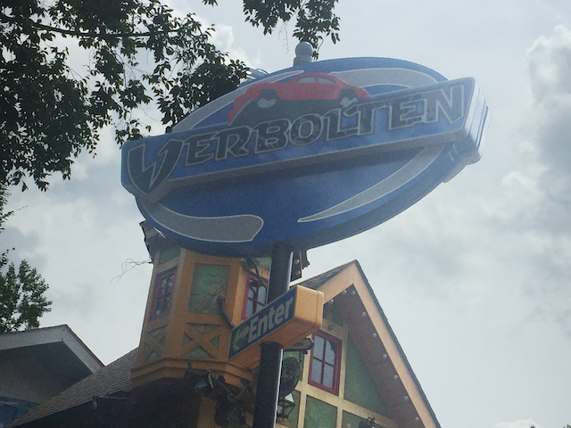
Decent Coasters
Invadr Review

Kiddy Coasters
Grover's Alpine Express Review
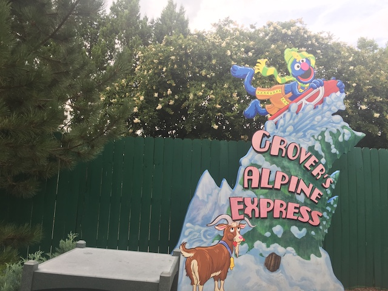
Flat Rides
All right. So Busch Gardens Williamsburg may not have the greatest flat ride collection in the world, but it still does have a good amount of decent flat rides to choose from. First up, we have Mach Tower, which is....a Mach Tower (I love how they just kept the prototype name. Or did they name the prototype after this ride?). Anyways, this is Busch Gardens Williamsburg's drop tower. And...it's a pretty fun one. It's of a decent height, you get a really nice view from the top, and it drops you down. Sounds pretty good. And it is. However, there's one big flaw with the design of this ride. I know this ride apparently had problems running, but....I never had any issues with this ride in Finland. And it worked just fine when I visited. Guess they finally fixed all the bugs. However, there is one issue I have with all the Mach Towers. The seats. Seriously! These things have NO arm room! NONE!!! Seriously, I'm a skinnyass twig, and even I feel claustrophobic in those seats! I wonder if obese people can even physically fit into this ride!? I guess this ride would be weight loss motivation. But...we already have that with them not being able to fit into the restraints on most coasters! We don't need to take away arm room for more motivation! Moving on, we also have Finnegan's Flyers. Nothing special about this ride. It's just a Screamin Swing. However, it did have a really nice view. And they're just fun rides in general. Those were just the flat rides I rode on my visit. However, they also have a Magic Carpet, a pirate ship, a Music Express, a scrambler, chairswings, teacups, bumper cars, and a carousel.
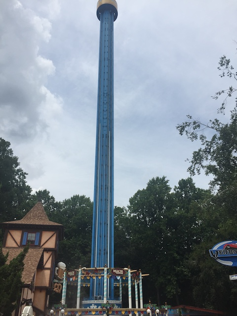
Fun ride. But...it really needs new trains.
Dark Rides
Busch Gardens Williamsburg has an interesting dark ride collection. I know it used to have what was supposed to be a really cool dark ride. Dark Castle. Now....I never got to ride this, but....it had the Spiderman technology! That alone makes it really cool. And from watching a POV of it (I know that I try to avoid doing that of dark rides, and judging a ride based off a POV is not cool. But....this is all I got), it seemed like it had a fun story, OK, not as cool as Spiderman since....it's Spiderman. But it still seemed pretty cool. Oh well. Moving onto their current dark rides. For that, we have the Battle of Erie. This is basically....a virtual reality show. And honestly, the virtual reality seems to work better here than in literally any coaster or ride that was repurposed for VR. It's a lot of fun and really works better than most simulators or 3D shows.
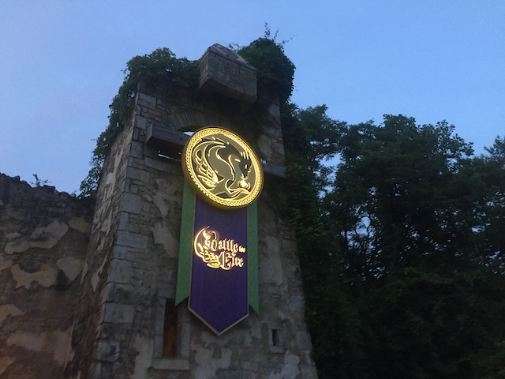
Much better than I expected. Definately recommend giving it a ride. =)
Water Rides
All right. Now the water rides at Busch Gardens Williamsburg are definately top notch. Let's start out with what is clearly their best water ride, and the one that actually gets some noteriety. Escape from Pompeii. Now the ride itself, is nothing special. It's literally just a standard shoot the chutes ride. Nothing special as far as the ride itself goes. So then why is it so well known and so well liked? Why is this gonna be a must-ride ride when I return and why was this a requirement instead of just a random ride I rode for fun? Simple. The theming. This ride has surprisingly good theming. I mean, the ride itself is themed to Pompei (fun place to visit BTW) and the volcano erupting. And the only escape, the drop. WEE!!! It's so simple, and yet....something about just seeing all sorts of fun theming of Pompeii being destroyed. I just really like that. Super fun ride. Speaking of water rides themed to Italy, there's also Roman Rapids. OK, as a rapids ride itself, this wasn't that great. Wasn't that impressed and it didn't get you that wet (which I guess was a good thing). Also, the theming was OK. Decent, but I liked it much better on Escape from Pompeii. But we still had a lot of fun on it, especially when paired up with a random family that was a lot of fun to ride with. And finally, all that's left is Le Scoot. Their log flume. This was....just a standard log flume. Fun, and it did have some good shots of Alpengeist and Invadr. However, we have so many better log flumes to compare it to. So...not the best by a long shot. But still fun.
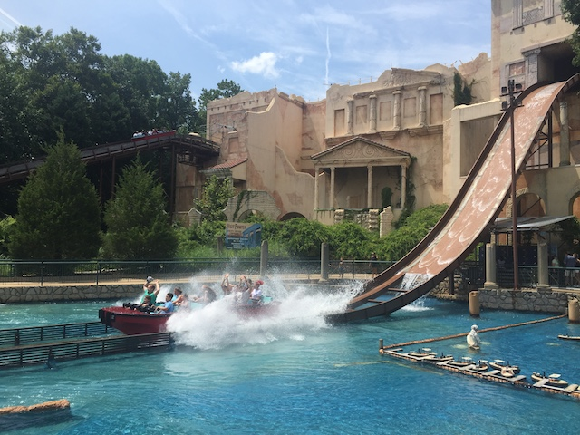
What's that? An apocolypse is happening? Better hope you can escape via shoot the chutes water ride. ;)
Water Park
Yep. Busch Gardens Williamsburg does have a water park. Water Country U.S.A. Now technically, this water park is not actually a part of Busch Gardens Williamsburg. It's got seperate admission and is really just across the street. But come on. Its associated with Busch Gardens Williamsburg and its just across the street. I never visited the park. It seems like a decent water park. But, yeah. Not good enough to justify shelling out the time. But who knows. I may possibly check it out in a future visit. Check it out and see for yourself if this is cool or not.
Dining
All right. Now the food at Busch Gardens Williamsburg is pretty damn good. Definately above average when it comes to typical amusement park food. That tends to be a reocurring theme when it comes to the Busch Gardens & Sea World parks. I got the food at Marco Polo's Market, which serves Italian Food, as well as Medeterranian and Asian Cuisine (why that? I don't know). And....it was really good Spaghetti and Lasagna. Plus, they had Black Forest Cake, which....I really am a fan of that. Putting that aside, they also have German Cuisine, Irish Cuisine, as well as your traditional American Foods that they always serve at theme parks. And even BBQ if that's what you're into. And from my meal, and the typical trend of the food at Busch Gardens and Sea World parks, I bet they're all very high quality and very good.
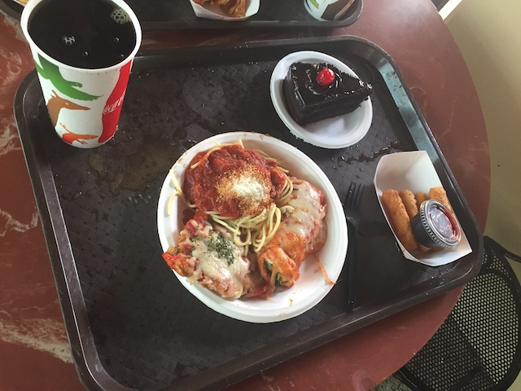
Italian Food + Black Forest Cake = Happy Kevin. =)
Theming and Other Attractions
Here are the reviews of all the other stuff at Busch Gardens Williamsburg. First off, as far as theming goes, the entire park is themed to Europe. And....they do a really good job. They really theme all the different areas to various different European countries. And I have to say. They REALLY do a good job at making it look like Europe from my experiences visiting that region of the world. And they don't miss a single spot. They really immerse you into the atmosphere of Europe. OK. So the theming is great. What about other things to do? Well...there's also REALLY good in that regard too! First off, there's actually a lot of animals at Busch Gardens Williamsburg. Now, it's not as exciting as in Busch Gardens Tampa, as....that features more exotic animals, since...that park is themed to Africa. Whereas Busch Gardens Williamsburg is themed to Europe, and so....they have European animals. A couple foxes and wolves, throw in some pets, cause....they're easier. Oh, and some repitles. And of course, with the animals comes animal shows. And....I'm sure there's plenty of other animal shows, as well as other shows themed to Europe throughout the park. And finally, if you just wanna relax, take a ride on a Rhine Cruise, or any of that stuff, well.....this is a park to do that and relax at.
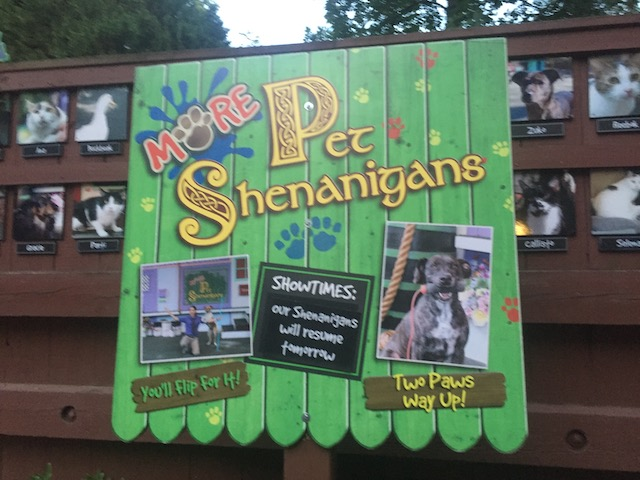
"Mommy! Can Rover star in the show at Busch Gardens Williamsburg?"
In Conclusion
Busch Gardens Williamsburg is a really great park and without a doubt, one of the best parks in America. Not only is their coaster collection really good (and this is without Pantheon, which I'm pretty sure is their new best ride), but the rest of the park is really great. All the theming to make it seem like Europe is really well done, and they do a lot to make it so that the park really emerses you in various different European cultures. They really do a great job with the theming and blending in the cultures with all of the rides. And they have people from the countries they're theming to basically....tell you what it's like. On top of that, there's some good shows, you can even see animals if zoos are your thing, and it's just a great park to spend a lot of time in. I can not recommend this park enough with all that it has to offer. Seriously, if you're in Virginia, make sure to swing by and visit Busch Gardens Williamsburg.
Enthusiast FAQs.
*Are there kiddy coaster restrictions? - Nope. You can ride Grover's Alpine Express here.

Tips
*Get a park map as Busch Gardens Williamsburg is not an easy park to navigate.
*Wear pants or shorts with zippered pockets to keep your stuff secure.
*Apparently Busch Gardens is friendly to Go-Pro POVs and truly secure stuff. But...zero tolerance for phone POVs or anything like that. Glad to see they really mean it when it comes to safety.
*Check out all of the theming and spend some time soaking it in.
*Have Fun!
Location
Williamsburg, Virginia, USA
Theme Park Category:
Theme Park
Last Day Visited
July 26, 2019
Video
I have not yet made an official Busch Gardens Williamsburg video. I may make one later on. Not sure if the footage I shot is enough.
Complete Update List
2019
Mid-Atlantic 2019 Trip
Here's a link to the parks website.
Home
|